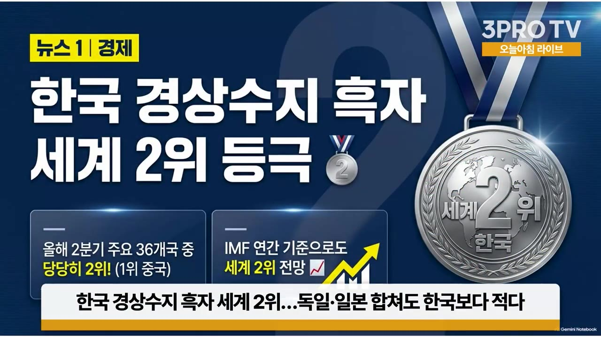
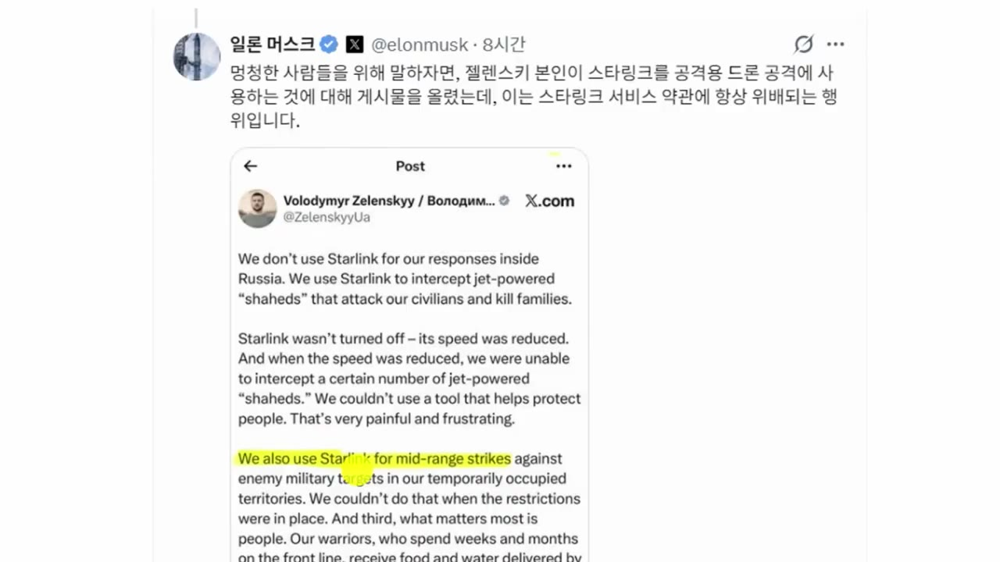

한국 경상수지 흑자 세계 2위…독일·일본 합쳐도 한국보다 적다 | 머스크 "우크라 스타링크 차단"…통신망 불안 '탈스타링크' 비상 | 권순우 삼프로TV 취재팀장 [뉴스3]
🎙️ 자막 대신 영상 음성을 받아써서 정리 (ko (음성 받아쓰기·GPU))
▶ 원본 영상 보기한눈에 보기
- 2분기 한국 경상수지 흑자는 1,166억 3천만 달러로 36개국 중 2위입니다. 3위 독일(522억)과 4위 일본(506억)을 합친 것보다 많고, 반도체 수출이 181% 늘어난 덕이 큽니다.
- 골드만삭스는 코스피 목표를 12,000에서 9,000으로 낮췄습니다. 그래도 60% 넘게 오를 여지가 있다고 했고, 한국 증시 PER(4배, 반도체 빼도 7.6배)은 2006년 이후 18개 증시 중 가장 낮은 수준이라고 합니다.
- 이번 주 일정은 FOMC(동결 전망), SK하이닉스·삼성전자 실적, 이스라엘 총선입니다. 큰 행사지만 결과는 어느 정도 예측된다는 평가입니다.
- 머스크가 우크라이나군의 스타링크 사용을 직접 막으면서, 유럽·캐나다 등 동맹국이 자기 위성통신망을 서둘러 만들고 있습니다. 한국 위성 산업에도 기회가 될 수 있다고 봅니다.
- 내년 1월로 예정된 가상자산 과세는 또 미뤄질 것으로 보입니다. 제도 문제보다 정치적 판단이 큰 이유로 꼽힙니다.
이런 분께 도움이 됩니다
- 이번 주 국내외 증시 일정과 주요 뉴스를 한 번에 확인하고 싶은 투자자
- 반도체, 우주항공(위성), 가상자산 과세 이슈를 지켜보는 분
핵심 내용
경상수지 흑자 세계 2위: 독일과 일본을 합친 것보다 많다
- 2분기 경상수지 흑자는 1,166억 3천만 달러로, 통계가 확인된 36개국 중 2위입니다. (8:15)
- 1위 중국 1,937억 2천만 달러 · 2위 한국 1,166억 3천만 달러 · 3위 독일 522억 달러 · 4위 일본 506억 달러
- 독일과 일본을 합해도 1,029억 달러로 한국보다 적습니다.

- 가장 큰 원인은 반도체 수출액이 181% 늘어난 것입니다. (9:30)
- IMF는 한국 경상수지 흑자가 2028년까지 4천억 달러를 웃돌다가 2029년부터 줄어들 것으로 내다봤습니다. (10:28)
- 권순우 팀장은 좋은 지표가 나올 때마다 '피크아웃(정점 통과)'부터 걱정하는 분위기를 꼬집었습니다. 비관적인 주가 전망에도 전망치 같은 근거가 있어야 한다는 것입니다.
한국 증시는 반도체를 빼도 싸다
- 골드만삭스가 코스피 목표 지수를 12,000에서 9,000으로 낮췄습니다. (11:00)
- 보수적으로 가정해 낮췄을 뿐, 위험 대비 수익은 여전히 매력적이고 한국 주식이 크게 저평가됐다는 게 골드만삭스의 설명입니다.
- 시장이 기초 체력을 너무 비관적으로 주가에 반영하고 있어, 낮춘 목표치로도 지금보다 60% 넘게 오를 여지가 있다고 봤습니다.
- 한국 증시 PER(주가수익비율, 낮을수록 이익 대비 싸다는 뜻)은 4배이고, 반도체를 빼도 7.6배입니다. (12:00)
- 반도체만 따로 보면 "한 2쯤 되나?"라는 말이 나왔습니다(자막상 불분명).
- 블룸버그가 집계한 18개 증시 가운데 2006년 이후 가장 낮은 수준입니다.
- 반도체 말고도 조선, 방산, 전력기기, 화장품, 원전, 가스터빈이 좋다고 꼽혔습니다.
💡 "반도체 때문에 싸 보일 뿐"이라는 말은 틀렸다. 반도체를 빼도 PER 7.6배다.
이번 주 주요 일정
🔁 이번 주 이벤트 (10월 넷째 주)
- FOMC 회의
- SK하이닉스 실적
- 삼성전자 실적
- 해외 정치 일정
- 1FOMC 회의
27~28일 정례회의에서 기준금리를 정합니다. 로이터가 100명에게 물었더니 94명이 동결을 예상했습니다. (13:16)
- 같은 100명은 12월에 전원 금리 '인상'을 예상했다고 합니다(자막 그대로이며, '인하'를 잘못 말했을 수 있어 확인이 필요합니다).
- 존 윌리엄스 뉴욕 연은 총재의 "서두를 필요 없다, 지표를 더 봐야 한다"는 이번엔 동결하고 다음에 보자는 뜻으로 읽힙니다.
- 2SK하이닉스 실적
28일 발표합니다. 영업이익 컨센서스(시장 예상치)는 약 76조 원입니다.
- 3삼성전자 실적
29일 발표합니다. 잠정 영업이익은 107조 4천억 원으로, 하이닉스와 합하면 약 184조 원입니다. (10:50)
- 4해외 정치 일정
이스라엘 총선(네타냐후 재집권과 연정 성공 여부)이 있고, 브라질 대선도 곧 치러집니다.
- 정리하면 "실적은 잘 나오고 금리는 동결" 정도로 예측할 수 있는 주라는 평가입니다.
SK하이닉스: 솔리다임 상장 철회와 특별배당 가능성
- 금요일 장 전에 솔리다임 상장 철회가 발표되면서, 전날 미국 증시가 크게 빠졌는데도 하이닉스는 마이너스에서 돌아서 3% 넘게 올랐습니다. (3:36)
- 주말 미국에서는 하이닉스 ADR(미국 상장 주식예탁증서)이 4% 넘게, 마이크론이 2.4% 올랐습니다.
- 키옥시아 지분을 팔아 약 20조 원의 차익이 예상되고, 3분기 실적 때 특별배당 계획을 발표할 것이라는 보도가 있습니다. (4:45)
- 권순우 팀장은 상장 철회를 양면으로 봤습니다.
- 좋은 점: 지배구조가 더 복잡해지는 것을 막고 주주가치를 지킵니다.
- 나쁜 점: 솔리다임 투자금을 하이닉스가 직접 대야 해서, 배당에 쓸 수 있는 현금이 줄어듭니다.
- 일회성 이익도 특별배당으로 나눈다면, 그동안 무시해 오던 일회성 이익에 대해 시장에 새 신호를 주게 됩니다. (7:03)
- 솔리다임(옛 인텔 낸드 사업부)은 인수 당시 "비싸게 샀다"는 비판을 받았지만, 지금은 메모리 호황으로 알짜 회사가 됐다는 평가입니다.
💡 한 번 번 돈이면 한 번 나누면 된다. 특별배당이 나오면 일회성 이익을 대하는 시장의 태도가 바뀔 수 있다.
인도네시아: 아시아 위기의 출발점이 될 수 있다는 걱정
- 권순우 팀장이 가장 찜찜하게 보는 뉴스입니다. 주가가 폭락했고 MSCI에서 퇴출돼, 현지에서는 'MSCI 탄압론'까지 나옵니다. (15:15)
- 정치 불안이 있고, 산불 책임을 두고 싱가포르와 다투고 있습니다.
- 8,300만 명에게 무상급식을 하면서 재정이 크게 약해졌습니다.
- 김동환 프로는 현지에서 보니 2달러짜리 도시락이 중간에서 빼돌려져 1달러짜리로 나온다며, 민심이 매우 나쁘다고 전했습니다.
- 1990년대 후반 외환위기도 인도네시아와 태국에서 시작해 한국으로 번졌으니 조심해서 볼 필요가 있다고 했습니다. (16:00)
- 산불은 팜 농장을 만들려는 화전에서 시작되는 경우가 많아, 다 탈 때까지 끄지 못하고 둔다고 합니다.
머스크의 우크라이나 스타링크 차단
- 머스크가 우크라이나군의 스타링크 사용을 직접 제한하라고 지시한 것으로 알려졌습니다. (17:37)
- 우크라이나가 드론으로 러시아 정유시설을 공격한 뒤 트럼프 대통령이 기름값 때문에 공격을 멈추라고 한 시점에 스타링크가 끊겼습니다. 그래서 미국 정부의 결정이냐 머스크 개인의 결정이냐는 논란이 있었습니다.
- 머스크는 이렇게 밝혔습니다. "멍청한 사람들을 위해 말하자면, 젤렌스키 본인이 스타링크를 드론 공격에 썼다고 자랑했는데 이는 서비스 약관 위반입니다." (18:26)
- 젤렌스키가 중거리 타격에 스타링크를 썼다고 말한 것이 계기가 됐습니다.

- 스타링크는 상업용, 스타쉴드는 군사용입니다. 우크라이나는 드론에 쓴 것은 스타쉴드라고 반박하고 있어 논란이 남아 있습니다. (19:11)
- 국가 안보에 꼭 필요한 통신망을 정치적 발언이 잦은 CEO 한 사람이 끊을 수 있다는 점이 문제입니다.
탈스타링크 흐름과 한국 위성 산업의 기회
- 유럽, 캐나다 등 미국 동맹국이 자체 위성통신망 구축을 서두르고 있습니다. (20:11)
| 누가 | 반응 |
|---|---|
| 폴란드 외무장관 | 제품을 정치적으로 이용할수록 브랜드가 더 크게 망가진다고 비판 |
| 케빈 크레이머 미국 상원의원(공화당) | 한 시스템, 한 사람, 한 기업에 지나치게 기대면 안 된다고 지적 |
| 우크라이나·핀란드 | 노키아 중심의 위성통신망 구축에 참여하겠다고 발표 |
| 캐나다 | 위성 280개를 띄우겠다는 이야기가 계속 나옴 |
- 지금까지는 스타링크가 위성을 만 개나 올렸는데 이제 와서 몇 개 올려 봐야 소용없다는 분위기였습니다. 이번 일로 스타링크만큼은 못 해도 비상시에 쓸 통신위성은 직접 가져야 한다는 인식이 생기고 있습니다. (21:13)
- 발사체는 어느 나라도 스페이스X와 겨룰 수 없지만, 한국은 위성을 이미 수출하고 있어 위성 분야에서는 가능성을 따져 볼 여지가 생겼다는 분석입니다. (22:00)
💡 '스타링크의 압도적 1위'가 '나라마다 하나씩 가져야 할 안보 자산'으로 바뀌는 시작점이 될 수 있다.
가상자산 과세, 또 연기될 듯
- 내년 1월(약 두 달 반 뒤) 시작될 예정이던 가상자산 소득 과세가 미뤄질 전망입니다. 청와대 관계자는 '청년 자산 사다리 존중' 같은 청년층 목소리를 반영했다고 말했습니다. (24:31)
- 세법을 바꿔야 하는 일이라 청와대가 아니라 국회가 정합니다.
- 경제부총리는 지난달 인사청문회에서 1월 시행이 바람직하다고 했다가, 국정감사에서는 "의견을 더 듣고 숙고하겠다"고 말을 바꿨습니다. 부총리 이름은 자막에 '이영일'과 '이형일'이 섞여 있습니다(자막상 불분명).
- 권 팀장은 정부 입장이 바뀌었다기보다 국회 일정에 맞춰 여지를 열어 둔 것으로 해석했습니다.
🔁 가상자산 과세 연기 과정
- 소득세법 개정
- 2022년 시행 예정
- 세 차례 연기
- 또 연기 논의
- CARF 참여
- 1소득세법 개정
2020년 개정 소득세법에 가상자산 과세가 들어갔습니다.
- 22022년 시행 예정
처음 시행하려던 해였지만 미뤄졌습니다.
- 3세 차례 연기
계속 미뤄져 2027년 1월 시행이 예정돼 있었습니다. (26:18)
- 4또 연기 논의
국회 논의를 거쳐 다시 미뤄질 전망입니다.
- 5CARF 참여
2029년부터 OECD 암호화자산 자동정보교환체계(CARF)에 참여하므로, 그때에 맞춰 과세하지 않겠냐는 말도 있습니다.
- 권 팀장은 연기의 진짜 이유를 정치적 판단으로 봤습니다.
- 금투세(금융투자소득세)를 도입하지 않기로 해서 가상자산만 과세하면 형평성 문제가 생깁니다.
- 가상자산의 법적 성격도 아직 정해지지 않았습니다.
- 세금이 예상보다 더 걷히는 '초과세수' 상황이라 굳이 비판을 감수할 이유가 없습니다.
- 미국과 일본은 CARF와 상관없이 이미 과세하고 있으므로, 해외 제도를 가져와 보완하면 못 할 일도 아니라는 의견입니다.
- 업비트·빗썸 같은 국내 거래소는 자료를 얻기 쉽지만, 바이낸스 같은 해외 거래소나 개인 간 거래는 파악하기 어렵습니다.
- 올해 증권거래세와 농어촌특별세로 평년보다 약 20조 원이 더 걷혔을 것으로 추정됩니다. 자본시장에서 걷은 돈이니 자본시장을 위해 써야 한다는 의견이 나왔습니다.
기억할 숫자·인용
- 2분기 경상수지 흑자: 중국 1,937억 2천만 달러, 한국 1,166억 3천만 달러, 독일 522억 달러, 일본 506억 달러
- 반도체 수출액: 181% 증가
- 삼성전자 잠정 영업이익 107조 4천억 원 + SK하이닉스 예상 영업이익 약 76조 원 = 약 184조 원
- 키옥시아 매각 차익: 약 20조 원(추산)
- 골드만삭스 코스피 목표: 12,000 → 9,000, 그래도 60% 넘게 오를 여지
- 한국 증시 PER 4배, 반도체 제외 7.6배, 18개 증시 중 2006년 이후 최저 수준
- FOMC 동결 예상: 100명 중 94명
- 인도네시아 무상급식 대상: 8,300만 명
- 머스크: "젤렌스키 본인이 스타링크를 드론 공격에 썼다고 자랑했는데, 이는 서비스 약관 위반"
- 크레이머 상원의원: "한 시스템, 한 사람, 한 기업에 지나치게 의존해서는 안 된다"
- 가상자산 과세: 2020년 법 개정, 2022년 시행 예정에서 세 차례 연기, CARF는 2029년부터 참여
생각해볼 점
- 저평가 해석(영상 주장 vs 내 의견): 영상은 PER 4배를 저평가 근거로 듭니다. 하지만 반도체처럼 경기를 타는 업종은 이익이 정점일 때 PER이 가장 낮아 보입니다. 피크아웃 걱정을 무조건 비관으로 볼 수는 없으니, 메모리 가격 전망 같은 근거를 따로 확인해 볼 만합니다.
- 12월 금리 전망: 자막에는 "12월 전원 금리 인상 예상"으로 나오지만 앞뒤 맥락과 잘 맞지 않습니다. 로이터 원문 설문을 직접 확인하는 것이 좋습니다.
- 탈스타링크의 실제 속도: 동맹국의 자체 위성망은 아직 계획 단계가 많습니다. 실제 예산과 발주가 한국 위성 기업 수주로 이어질지는 시간을 두고 지켜봐야 합니다. 투자 판단은 영상 속 의견일 뿐입니다.
바로 해볼 일
- 28일 SK하이닉스 실적 발표에서 키옥시아 특별배당 계획이 나오는지 확인하기
- 27~28일 FOMC 결과와 성명 속 12월 금리 관련 문구 확인하기
- 가상자산을 갖고 있다면 과세 연기 확정 여부(국회 세법 개정 논의)를 지켜보고, 거래 기록을 미리 정리해 두기